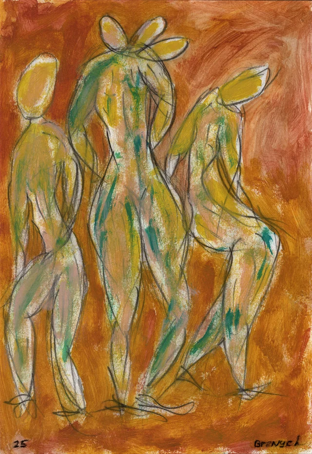
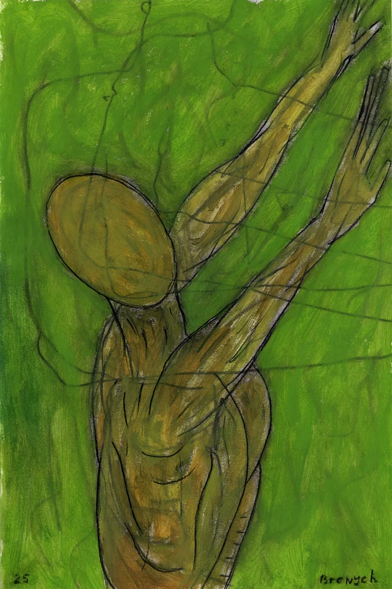
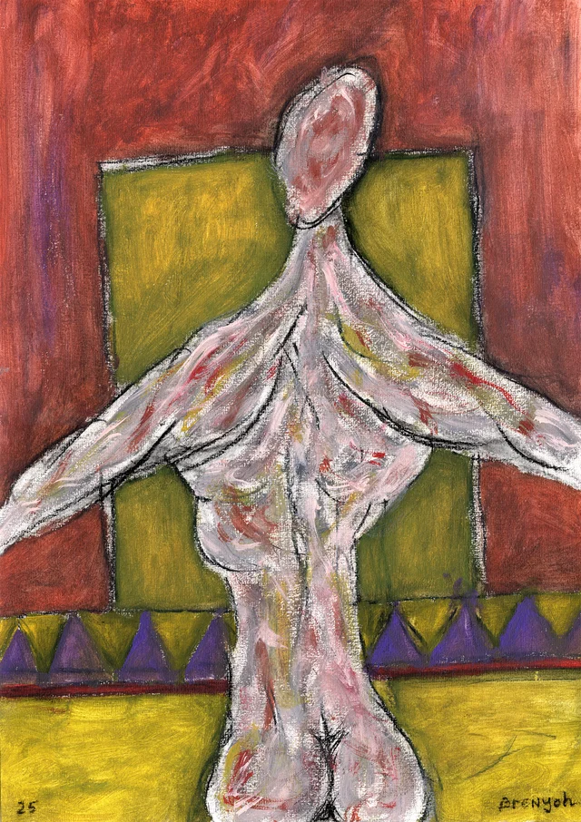
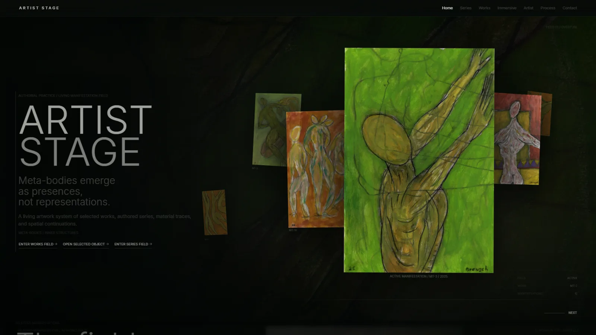
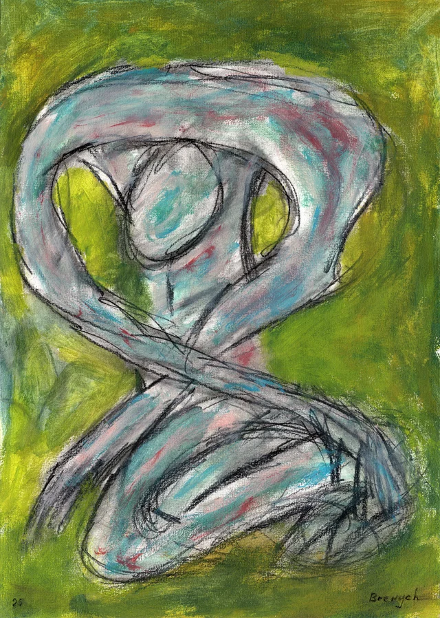
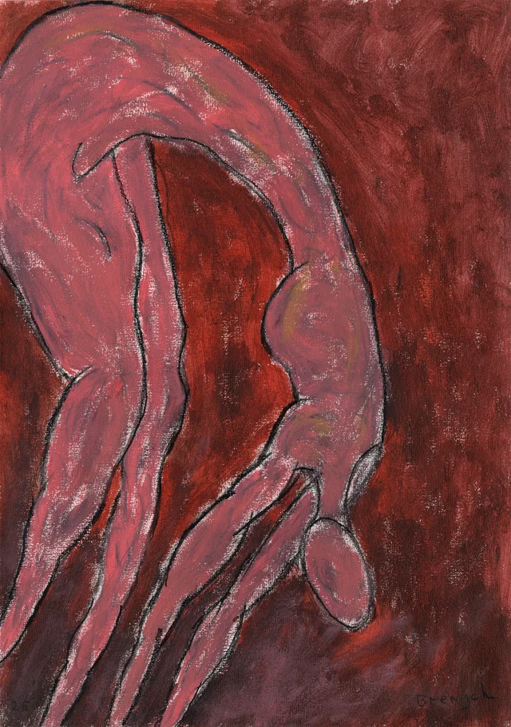
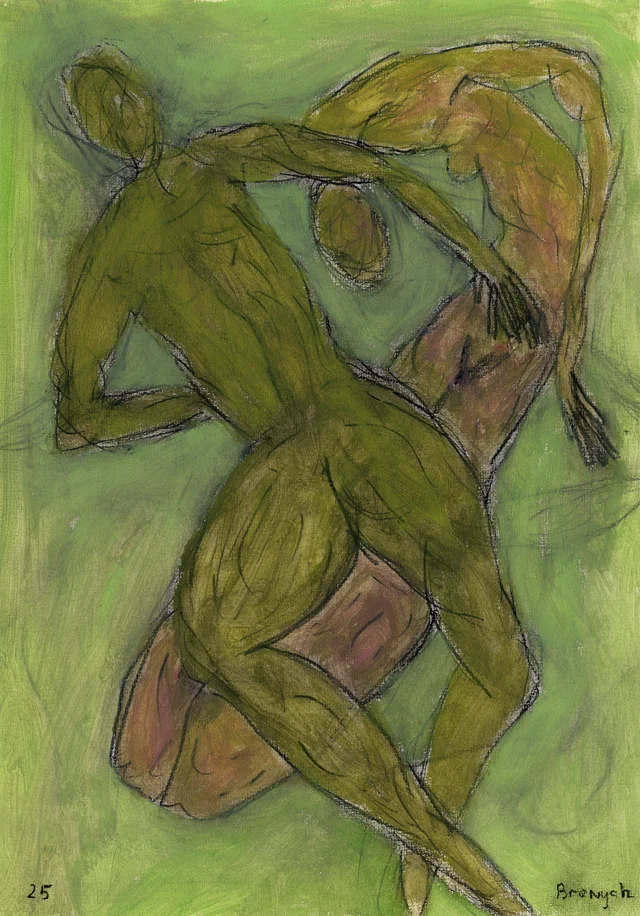

Universal cinematic environment tool / v1.1
Як перетворити реальні зображення проекту на живий матеріальний простір: пам'ять, тиск, світло, рух і безперервність маршруту.
01 / Definition
LBE перетворює реальне зображення на часовий простір, у якому pigment, memory, pressure і directed light працюють як одна система.
“Картина не розміщується поверх середовища. Картина генерує середовище.”
Оригінальний живопис стає джерелом кольору, зерна, лінії й просторового рельєфу.
Поле рухається автономно. Взаємодія змінює його енергію, але не є єдиною причиною життя.
Активна робота, copy, фон і світло мають спільну домінанту та одну експозиційну логіку.



Reference source: authentic ARTIST STAGE paintings. Magnification and abstraction preserve authorship; unrelated generated imagery is outside the contract.
02 / Design principles
Тільки канонічні зображення проекту. Матеріал можна збільшувати, змішувати й рефрагувати, але не підміняти.
Поле змінюється без вводу. Після scroll або pointer impulse воно повертається до autonomous breathing.
Foreground залишається чітким. Background абстрагується. Світло не розподіляється рівномірно.
Hero та довга editorial route мають одну експозицію, без сірих секцій, меж і різких atmosphere cuts.
WebGL не є єдиною точкою відмови. Reduced motion і fallback зберігають живу матеріальну присутність.
Static crop, cursor dent, fast opacity crossfade, archive-wide texture preload, flat route illumination.
03 / Architecture
WebGL material, narrative target director і DOM exposure director споживають одну активну artwork identity.
HomePrologueField.astro WebGL renderer + shader + lifecycle HomeLivingEditorialSurface.tsx dominance + dwell + light target homeLivingField.ts authored spatial route index.astro continuity bridge + exposure layers CinematicIdleField.astro global presence behavior
04 / Experience grammar
Raw events never drive pixels directly. Every input is clamped, damped and translated into a broad material response.
velocity -> short impulse journey -> slow crop migration target -> 320ms intent dwell presence -> pressure / aperture depth pointer -> broad field lean

05 / Texture lifecycle
Попередня робота залишається матеріальним слідом. Наступна існує в GPU лише на час переходу.
2 resident textures. Current and previous memory.
3 resident textures. Incoming is temporary.
Previous memory disposed. Incoming becomes current.
memory <- previous current current <- incoming dispose <- previous memory
06 / Shader anatomy
Low-frequency waves with different speeds create one coherent pressure field. The background remains visibly alive at rest.
A slow route journey changes the dominant pigment fragment. Deformation alone cannot rescue a static wallpaper crop.
The prior work reappears through moving, irregular regions instead of a global crossfade or second rectangle.
Fine source sampling returns after broad warp, protecting grain, charcoal and brush structure from blur.
Luminance differences, ridges and palette light create fronts and folds without pretending to be literal 3D.
Color separation is subtle, temporal and subordinate to source integrity. No digital RGB spectacle.



07 / Cinematic handoff
const t = clamp((now - startedAt) / 5200, 0, 1); const eased = t * t * t * (t * (t * 6 - 15) + 10);
Головна умова якості: усі transition-only складові повинні повністю зникнути у resting state. Інакше пульсація читається як flicker або rendering bug.
08 / Interaction direction
Broad global lean, velocity-derived energy, smooth return.
≈ 0.007 × 0.005 UVShort pressure impulse that decays quickly after movement.
fast dampingSlow crop migration and route-depth progression.
slow dampingBiases shear/front movement without reversing the whole shader.
-1 / +1Changes the target only after the candidate remains authored and visible.
320ms dwellControls pressure, aperture depth and exposure targets.
continuous 0..1Радіальне спотворення в місці курсора видає техніку й руйнує відчуття цілісної мембрани.
Scroll crossing не дорівнює вибору. Короткий dwell захищає п'ятисекундний handoff від випадкових запусків.
Raw input → clamp → damp → authored material response.
09 / Directed exposure
Canonical artwork pixels remain filter-neutral. Exposure lives in wrappers and pseudo-layers, preserving real color, paper and detail.
artwork image: no destructive filter wrapper: shadow + edge veil ::before: local pigment pocket ::after: key reflection / sheen
A 38rem masked bridge continues the outgoing Hero exposure, then dissolves. No horizontal border, gray panel or near-opaque section surface may cut the fixed field.
10 / Presence integration
LBE consumes the global presence state. It does not create a competing timer or restart its shader on every phase.
Dream acts change targets for pressure, aperture and light. Temporal waves remain continuous across state boundaries.
Canonical images never oscillate toward zero opacity. Deep idle belongs to material and text behavior.
Ordinary activity restores clarity progressively. Hidden-tab time is excluded from active transitions.
Stillness becomes another authored chapter, not the end of animation.
11 / Portable contract
type LivingBackgroundTexture = {
slug: string;
src: string;
width?: number;
height?: number;
palette?: {
field: string;
glow: string;
accent: string;
};
};
type LivingBackgroundController = {
setTarget(detail): void;
setPresence(depth, act?): void;
setJourney(progress,
velocity?, direction?): void;
getState(): DebugState;
destroy(): void;
};
window.dispatchEvent(
new CustomEvent("living-background:target", {
detail: { slug: "work-03", source: "scroll" }
})
);
Renderer не повинен знати, чи target прийшов із carousel, scroll chapter, CMS route, installation controller або keyboard navigation.
ARTIST STAGE adapter currently maps this contract to artist-stage:home-prologue-target.
12 / Adaptation
| Context | Motion | Transition | Memory | Lighting |
|---|---|---|---|---|
| Artist site | slow pigment current | 4.8-6.2s | previous work | authored key + copy pocket |
| Museum archive | very slow / low contrast | 5.5-7s | previous object | neutral directional exposure |
| Fashion editorial | stronger flow / chroma | 3.8-5.2s | previous look | narrow moving key |
| Performance | pressure responsive | 3.5-5.5s | prior scene | high-contrast cues |
| Product story | subtle surface drift | 3.2-4.8s | previous material | object-safe separation |
Слабкий результат частіше спричинений flat exposure або poor crop, а не недостатньою кількістю noise.
13 / Production contract
Reduced motion does not mean a frozen black background. It means a stable, low-frequency living material state.
14 / QA gate
host.__artistStageHomePrologueState() // currentSlug / memorySlug / incomingSlug / loadedTextureCount // progress / journey / scrollVelocity / state host.__artistStageHomePrologueSample() // canvas size / time-separated checksum / pixel samples / internal time
“Здається, фон застиг” стає перевіркою часу, checksum, state і resident texture count.
15 / Integration recipe
Three.js / full-viewport plane / real 2000px WebP sources 2 textures at rest / 3 during transition / 5200ms smootherstep 320ms target dwell / 38rem continuity bridge / 344rem authored route broad pointer lean / scroll impulse / Presence Director integration
LBE v1.0 готовий як патерн і reference implementation. Наступний технічний крок — extraction renderer core у незалежний пакет.
16 / Route cinematography v2
Lifecycle, presence signals and resource discipline may be universal. Image construction, exposure, transition direction and even the decision to use WebGL must remain route-specific.
Softened charcoal sampling, line emphasis and a slow diagonal raking light. The handoff reads as a working layer entering the surface.
Current and remembered paintings occupy localized dissolved planes. Independent warm and cool exposures create accumulated practice rather than wallpaper.
A near-black field reveals pigment only through broad crossing corridors. Motion is slow and the contact action remains dominant.
No full-screen artwork renderer. Broad tone-aware museum light follows hover and focus, then retains a short memory while canonical images stay crisp.
shared: 2 / 3 / 2 texture lifecycle, damped signals, reduced motion, teardown authored: UV construction, memory masks, light map, tempo, target policy exception: choose canvas-free light when WebGL duplicates or weakens the content
Route identity is structural. A palette swap is not art direction.